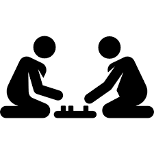

El objetivo del juego es construir pueblos, ciudades y caminos sobre un tablero que es distinto cada vez, mientras se van acumulando varios tipos de cartas. Todos estos elementos proporcionan distintas puntuaciones, ganando la partida el primer jugador que llega a los diez puntos.
 3-4 60 minutos
El Gran Libro de la Locura es un juego cooperativo en el que vos y tus amigos tienen que cerrar un libro prohibido derrotando los terribles monstruos que escapan de cada página, ¡antes de volverse locos!
2-5 60-90 minutos
Sheriff of Nottingham es un juego de deducción social extremadamente divertido con mecánicas adicionales que lo convierten en algo más que un juego de fiesta. El Sheriff es el enemigo común de los comerciantes, sin embargo, no solo pueden engañarlo, sino también manipularlo para hacer retroceder a otros comerciantes.
3-5 60 minutos
Scythe es un juego de estrategia Ambientado en húmedo y brumoso Europa Oriental en una realidad alternativa, gigantescos mechs patrullan la tierra, una resaca del Primer Mundo Guerra. Tu objetivo es llevar a tu clan a convertirse en el más rico de la tierra.
1-5 90-115 minutos
Este superhéroe bestial escala sin miedo los edificios más altos para divisar a ladrones y bribones. Es fuerte como un león y listo como un zorro, pero también es pesado como un rinoceronte. Esto hace que se tambaleen hasta los rascacielos más sólidos.
2-5 15 minutos
La Guerra del Anillo es un gran juego de estrategia que permite sumergirse en el mundo de El Señor de los Anillos, de J.R.R. Tolkien y experimentar su acción épica, sus dramáticos conflictos y sus personajes memorables. El juego se basa en que 2 jugadores encarnarán las fuerzas de los Pueblos libres de Gondor y los Elfos, el otro jugador tendrá Rohan, el Norte y los Enanos; los otros dos jugadores encarnarán las fuerzas del mal, uno será el Rey Brujo y el otro jugador tendrá el dominio de Saruman y las fuerzas del Este y el Sur.
2-4 180 minutos
Draftosaurus es un juego que se separa en dos rondas, en cada una de las cuales los jugadores empezarán con seis dinosaurios ocultos en su mano, con los que irán haciendo un draft. La mecánica de draft, la cual da el nombre al juego y viene descrita al final del reglamento para los que la desconozcan, se basa en la selección de un elemento tras lo que pasaremos los restantes a otro jugador. El objetivo en Draftosaurus será el de crear un parque de dinosaurios lo más molón posible. Para ello iremos colocando dinosaurios sobre nuestro tablero individual.
2-5 15 minutos
Arkham Horror es un juego de mesa cooperativo en el que los jugadores asumen el papel de investigadores que intentan librar al mundo de los seres celdritch conocidos como antiguos. Basado en las obras de H.P. Lovecraft, los jugadores deberán reunir pistas, derrotar a monstruos terroríficos y encontrar herramientas y aliados si quieren tener alguna posibilidad de derrotar a las criaturas que habitan más allá del velo de nuestra realidad.
1-7 120-240 minutos
Somos un gran equipo, formado por representantes de las razas más importantes de nuestro mundo de fantasía épica: un enano, una humana maga, una elfa, y un humano bárbaro. Nos han encomendado una nueva aventura, pero… ¡nos han robado nuestras armas! tenemos un plan. No es el más honrado, pero… tenemos que hacer lo que sea para recuperar nuestras posesiones. Y el plan es: ¡robar equipo nuevo! Y vamos a robar en… un centro comercial, el problema es que disponemos de solo unos minutos para robar las armas y escapar antes de que suene la alarma.
1-4 15 minutos
HDP es el juego de humor negro que va a responder a la pregunta: ¿cuál es el más zarpado entre los jugadores? Un jugador (el HDP) lee una carta de pregunta y los demas responden con las cartas de su mano. La que más graciosa le resulte al HDP, gana.
4-12 30 minutos